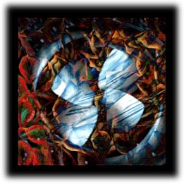

| See without Looking | Looking without seeing | |
| Hear without Listening | Listening without hearing | |
| Smell without Sensing | Sensing without smelling | |
| Touch without Feeling | Feeling without touching | |
| Taste without Savouring | Savouring without tasting |
The suffocation of late 20th century consumer environment has yielded to the mirage of a techno-cultural oasis. The opportunity to consume is limitless .Value is redefined by convenience. Consumption is time based.
The internet presents an electronic navigational environment for communication. The language of this environment is installed with a digital dialect. Its channels are filled with not water, but optic fibers, along which the corporate pirates navigate and pursue trade. Capital incentive is hence the colonist for economic expansion. Communcation strength is determined by the length and breadth of these linkages. Specialized trading points remain supply depots for bata and exchange. Information is hence a commodity, sought by the hapless navigator.

"Senseless" represents the lack of subtle sensory application within this catacomb of late twentieth century media technology. The inter-reactive collapse of media and method - with sensory overload.